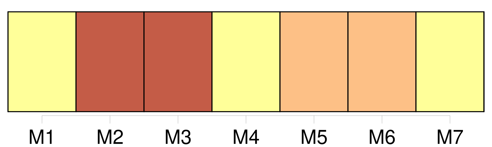
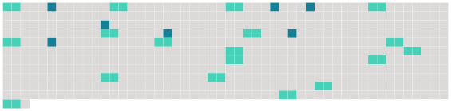

Longueur nb maillons : 25 mentions |
  |
[Le mari] doit protection à [sa] femme, la femme obéissance à [son mari] [1 phrases]
La femme est obligée d'habiter avec [le mari] , et de [le] suivre par-tout où [il] juge à propos de résider : [le mari] est obligé de la recevoir, et de lui fournir tout ce qui est nécessaire pour les besoins de la vie, selon ses facultés et son état. [3 phrases]
L'autorisation du [mari] n'est pas nécessaire lorsque la femme est poursuivie en matière criminelle ou de police. [1 phrases]
La femme, même non commune ou séparée de biens, ne peut donner, aliéner, hypothéquer, acquérir, à titre gratuit ou onéreux, sans le concours [du mari] dans l'acte, ou [son] consentement par écrit. [1 phrases]
Si [le mari] refuse d'autoriser [sa] femme à ester en jugement, le juge peut donner l'autorisation. [1 phrases]
Si [le mari] refuse d'autoriser [sa] femme à passer un acte, la femme peut faire citer [son mari] directement devant le tribunal de première instance de l'arrondissement du domicile commun, qui peut donner ou refuser son autorisation, après que [le mari] aura été entendu ou dûment appelé en la chambre du conseil. [1 phrases]
La femme, si elle est marchande publique, peut, sans l'autorisation de [son mari] , s'obliger pour ce qui concerne son négoce ; et, audit cas, elle oblige aussi [son mari] , s'il y a communauté entre eux.
Elle n'est pas réputée marchande publique, si elle ne fait que détailler les marchandises du commerce de [son mari] , mais seulement quand elle fait un commerce séparé. [1 phrases]
Lorsque [le mari] est frappé d'une condamnation emportant peine afflictive ou infamante, encore qu'elle n'ait été prononcée que par contumace, la femme, même majeure, ne peut, pendant la durée de la peine, ester en jugement, ni contracter, qu'après s'être fait autoriser par le juge, qui peut, en ce cas, donner l'autorisation, sans que [le mari] ait été entendu ou appelé. [1 phrases]
Si [le mari] est interdit ou absent, le juge peut, en connaissance de cause, autoriser la femme, soit pour ester en jugement, soit pour contracter. [3 phrases]
Si [le mari] est mineur, l'autorisation du juge est nécessaire à la femme, soit pour ester en jugement, soit pour contracter. [1 phrases]
La nullité fondée sur le défaut d'autorisation ne peut être opposée que par la femme, par [le mari] , ou par leurs héritiers. [1 phrases]
La femme peut tester sans l'autorisation de [son mari] |
 |
La ressource peut être téléchargée sur la page Ortolang
Si vous avez des questions ou vous voyez des erreurs, merci d'envoyer un mail à silvia.federzoni89@gmail.com
Site développé par S. Federzoni (contact)